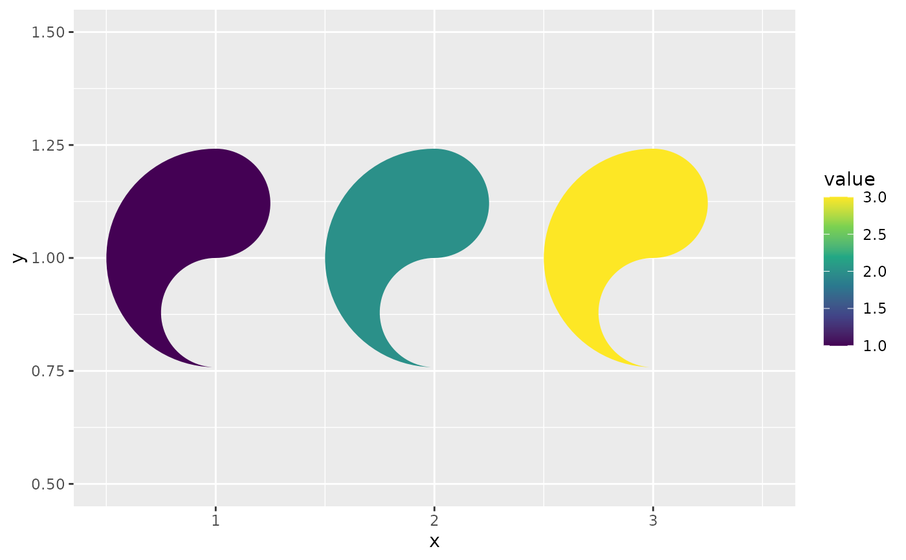
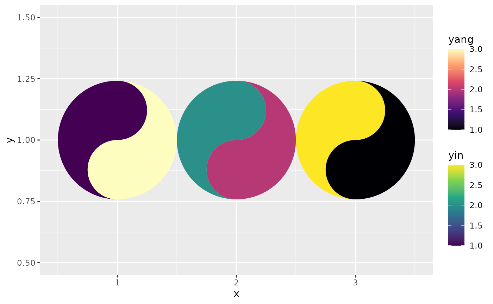

`geom_yin_fish()` and `geom_yang_fish()` each draw one of the two interlocking fish of a taichi symbol per `(x, y)` cell. They are the building blocks that [geom_taichi()] assembles (together with two fill scales and a [ggnewscale::new_scale_fill()] break); use them directly when you want full control — e.g. to bring your own fill scale for a single fish, to stack scales differently, or to draw only one source.
Usage
geom_yin_fish(
mapping = NULL,
data = NULL,
stat = "identity",
position = "identity",
width = NULL,
height = NULL,
eyes = FALSE,
na.rm = FALSE,
show.legend = NA,
inherit.aes = TRUE,
...
)
geom_yang_fish(
mapping = NULL,
data = NULL,
stat = "identity",
position = "identity",
width = NULL,
height = NULL,
eyes = FALSE,
na.rm = FALSE,
show.legend = NA,
inherit.aes = TRUE,
...
)Arguments
- mapping, data, stat, position, inherit.aes
See [ggplot2::layer()].
- width, height
Cell size; defaults to the resolution of the data.
- eyes
Logical. Draw the classic eye dot inside this fish's head?
- na.rm
If `TRUE`, silently removes rows with missing values.
- show.legend
Logical. Should this layer be included in the legends?
- ...
Other arguments passed to [ggplot2::layer()]: either aesthetics used as constant parameters (e.g. `eye_size = 0.2`) or geom parameters.
Details
Both geoms understand the aesthetics `x`, `y`, `fill`, `colour`, `linewidth`, `linetype`, `alpha`, `width`, `height`, `angle` (degrees, counter-clockwise), `eye_size`, and `eye_colour` (the latter two only matter when `eyes = TRUE`). At `angle = 0` the yin fish is the left half of the circle plus the top bulb (its head); the yang fish is the right half plus the bottom bulb.
Examples
library(ggplot2)
d <- data.frame(x = 1:3, y = 1, value = 1:3)
# a yin-only plot with an ordinary fill scale
ggplot(d, aes(x, y)) +
geom_yin_fish(aes(fill = value)) +
scale_fill_viridis_c()

# both fish, manually stacked with ggnewscale
ggplot(d, aes(x, y)) +
geom_yin_fish(aes(fill = value)) +
scale_fill_viridis_c(name = "yin") +
ggnewscale::new_scale_fill() +
geom_yang_fish(aes(fill = rev(value))) +
scale_fill_viridis_c(name = "yang", option = "magma")
